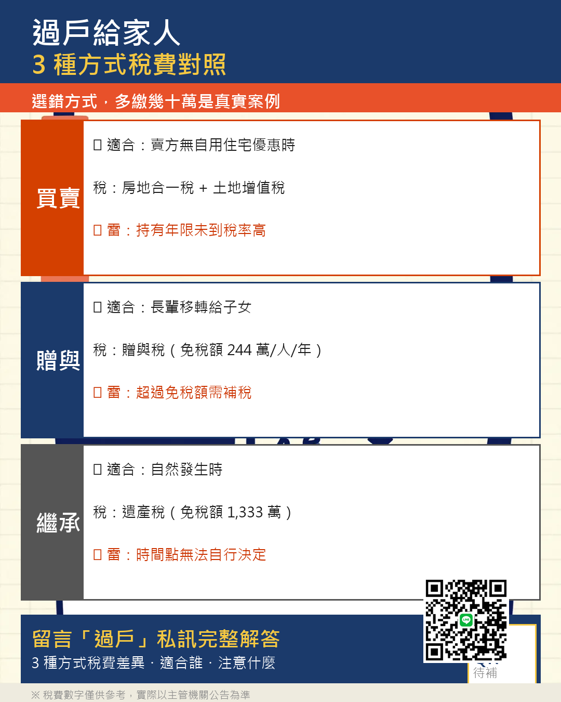

反擊系
1 部
▾
#01
直球反擊 v6｜房地合一稅工具
55–60 秒
第 01 批 · 2026-05-04
專業位
直接「你」開戰：你說反推要點返回？你說一頁式整個看得清楚？你說 BUG 都修完整？— 我來告訴你「完整」是什麼意思。設計嗆 + 反推嗆 + 3 細節碾壓（滿幾年提醒 / 必要費用 / 列印傳 LINE），收尾「你做的是 demo，我做的是給客戶實際報稅用的」。
Hook 0-8s
設計嗆 8-22s
反推嗆 22-30s
細節 ×3 30-50s
藏鏡人 ×1
CTA 50-60s
IG Reels
Threads
FB Reels
時間軸
0-8s
Hook：「你說我反推要點返回上一步。你說一頁式整個看得清楚。你說 BUG 都修完整——好，我來告訴你『完整』是什麼意思。」
8-10s
藏鏡人 1（畫外音同事驚疑）：「他真的這樣講喔？」
8-22s
設計嗆：「你做的是給房仲看的，所以一頁式房仲確實清楚。問題是客戶不是房仲，整頁那麼多欄位你以為每個人都熟？我做 9 步驟、每步問一個東西，是要讓一般人也填得對，不是給你看 demo 的。」
22-30s
反推嗆：「你批我反推要點返回上一步。我們有獨立的反推區塊，沒走到就批——叫沒用過。」
25-28s
藏鏡人 2（畫外音同事吐槽）：「連用都沒用就講喔。」
30-38s
細節 1 滿幾年提醒：「客戶再過半年就滿 6 年自住，可以省一筆稅，系統自動提醒他。你那個有嗎？」
38-45s
細節 2 必要費用：「成交價 3% 或 30 萬——兩個有一個沒滿，系統提醒可以用哪個對客戶最有利。你那個有嗎？」⚠ 算盤抓錯
45-50s
細節 3 列印傳 LINE：「客戶現場帶看就想看稅的數字，你那個還在叫人點返回。」
50-52s
藏鏡人 3（畫外音同事共鳴）：「這個差太多了啦。」
52-60s
CTA：「你做的是給仲介看的 demo，我做的是給一般客戶實際報稅用的。maskbago.com 連結在下面，自己跑一次比一下。」
殺手句
你做的，是給仲介看的 demo。
我做的，是給一般客戶實際報稅用的。
— 反推：「沒走到就批，叫沒用過」
— 藏鏡人：「連用都沒用就講喔」
— 設計：「客戶不是房仲，整頁那麼多欄位你以為每個人都熟」
— 收尾：「demo vs 報稅用」
⚠ 必要費用第 2 條算盤 FAIL（信心 92%）：腳本「3% 或 30 萬擇高」概念錯。真機制 min(成交價×3%, 30萬) 是推計上限；真正「擇高」是「推計 vs 核實」二擇高。改字方案 B 已備，明天驗 maskbago 工具邏輯後重派 scripter v7。
✅ §4-5 自住 6 年條件 PASS（信心 95%）。
✅ §4-5 自住 6 年條件 PASS（信心 95%）。
人間觀察派
6 部
▾
#01
買房前我做了一件朋友笑我的事
60 秒
第 01 批 · 2026-05-05
個人化諮詢
先把每月支出列清楚再看房，朋友笑我太誇張，但很多人是簽完約才發現超支。
IG Reels
FB Reels
Threads
時間軸
0-3s
我有個朋友，聽到我在看房之前做的這件事，笑我笑了三分鐘。
3-12s
我把每個月的支出全部列出來，算了一張表，才去看第一間房。就這樣，他說我太誇張。
10-12s
藏鏡人 1（疑問型）：「這也太謹慎了吧？」
12-25s
但說真的，很多人買房之後才發現月付壓力超出預期，那時候再後悔已經晚了。不是要你害怕買，是要你買得住、買得穩。
25-40s
我遇過客戶，簽完約才跟我說，其實他有點超支。那個當下我很難受，因為如果早一點聊，也許能找到更適合他的方式。
38-40s
藏鏡人 2（共鳴型）：「唉，我可能也是那種人…」
40-52s
所以現在只要有人問我買房，我第一句話都是，先把你的錢算清楚，OK嗎？其他的再說。
52-60s
CTA：想讓我幫你看看你的狀況，私訊我「算一下」，不用怕，問問不用錢。
字幕卡
「笑我 3 分鐘」｜「先算錢，再看房」｜「買得住，比買得到更重要」｜「先算清楚，再往前走」｜「私訊『算一下』」
#05
我入行才發現，帶看不是重點
60 秒
第 01 批 · 2026-05-05
個人化諮詢
真正重要的是第一次見面之前——了解這個人，再找房子給他。
IG Reels
FB Reels
Threads
時間軸
0-3s
做房仲前，我以為最重要的是帶看。做了才知道，帶看排倒數。
3-12s
真正重要的是第一次見面之前。你怎麼了解這個人、他在哪個階段、他的顧慮是什麼，這些決定了之後能不能真的幫上忙。
10-12s
藏鏡人 1（疑問型）：「不是帶他去看才開始嗎？」
12-25s
我有個客戶，接觸了快兩個月，中間聊過他的工作、家庭狀況、為什麼要換屋，才帶他看第一間。他說那是他看房體驗最好的一次。
25-40s
反過來，如果什麼都不了解就直接帶看，客戶也看，但就是沒感覺，因為那些房子根本不是他要的，只是我猜的。
38-40s
藏鏡人 2（共鳴型）：「對耶，我之前找房仲就有這種感覺。」
40-52s
所以我現在接到新客戶，第一步是聽，不是帶。聽清楚了再動，OK嗎？這樣才不會浪費彼此的時間。
52-60s
CTA：你也有買賣房的需求，想找個人好好聊一下的，私訊我「聊一下」，我來聽你說。
字幕卡
「帶看，排倒數」｜「見面前，比帶看更重要」｜「了解一個人，再找房子給他」｜「先聽，再動」｜「私訊『聊一下』」
#06
同年齡的朋友買了房，我卻在算能不能買
60 秒
第 01 批 · 2026-05-05
個人化諮詢
不是買不到，是還沒找到方法。先知道自己在哪裡，才能知道要走多遠。
IG Reels
Threads
FB Reels
時間軸
0-3s
你有沒有過那種感覺，朋友傳來新家的照片，你按了愛心，然後默默把手機放下。
3-12s
不是不替他開心，是心裡有一塊在想，我怎麼還沒到那一步？薪水就這樣，頭期款還差那麼多，搞不好我這輩子都買不起。
10-12s
藏鏡人 1（共鳴型）：「就是說，我也是這樣…」
12-25s
做房仲四年，我接觸過很多人，能買的和不能買的差距，有時候不是存款差多少，是有沒有人幫你算清楚、找對方向。很多人以為自己不行，其實是沒人好好跟他說明過。
25-40s
我有個客戶，三十歲出頭，他自己覺得完全沒希望，和我聊了一個下午，把他的收入、存款、可以用的資源全算了一遍，發現不是不可能，只是需要一個計畫。
38-40s
藏鏡人 2（疑問型）：「等等，真的有希望？」
40-52s
我不保證你明天就能買，但我可以幫你搞清楚你現在的位置，然後知道要走多遠、怎麼走。
52-60s
CTA：有想聊的，私訊我「我的狀況」，我們來看一下你的情況，OK嗎？不用怕，問問不用錢。
字幕卡
「按了愛心，然後放下手機」｜「怎麼還差這麼遠？」｜「不是買不到，是還沒找到方法」｜「先知道你在哪裡」｜「私訊『我的狀況』」
#07
帶客戶看到最後，他們問的問題都一樣
60 秒
第 01 批 · 2026-05-05
個人化諮詢
客戶最後想確認的是房仲的判斷。看你沒說出口的，是我的工作。
IG Reels
FB Reels
時間軸
0-3s
帶看帶多了你會發現，客戶最後問的那個問題，幾乎是同一句話。
3-12s
不是問面積，不是問屋齡，是問我：你覺得這間值嗎？就這樣。繞了一圈，最終他們想確認的，是我的判斷。
10-12s
藏鏡人 1（驚嘆型）：「原來最後都是問這個？」
12-25s
所以我帶看的時候，不是只帶你進去看，我在旁邊觀察你的表情、你在哪裡停下來、你看哪個角落最久。這些都是你沒說出來的答案。
25-40s
有一組客戶，走進一個房間，她停在窗邊很久，沒說話。我知道了。後來她也說，就是這個採光，就是這個感覺。那天很快就決定了。
38-40s
藏鏡人 2（共鳴型）：「哇這個細節我根本沒想到。」
40-52s
買房本來就不是純理性的，有感覺、算得過去，就是它了。我的工作是幫你確認那個感覺沒有跑偏，OK嗎？
52-60s
CTA：有在找房的，私訊我「帶我看」，我們來聊你想找什麼樣的。
字幕卡
「幾乎是同一句話」｜「你覺得這間值嗎？」｜「你沒說出來的，我都在看」｜「有感覺，算得過去，就是它」｜「私訊『帶我看』」
#09
神奇寶貝卡教我的事
60 秒
第 01 批 · 2026-05-05
個人化諮詢
很多東西的價值不只能換成錢。買房也一樣，那個安心感算不出來，但很重要。
IG Reels
Threads
時間軸
0-3s
我有一個習慣，不管一張卡值多少，我都不把它賣掉，就只是留著。我朋友說這樣不理性。
3-12s
但後來我想一想，很多東西的價值不是只有換成錢這一種。有些東西你留著，因為它提醒你一件事、一段時間、一個感覺，那個是沒辦法換算的。
10-12s
藏鏡人 1（共鳴型）：「哇這個說法還滿有意思的。」
12-25s
這讓我想到很多買房的人，他們在意的不只是坪數或增值，是那個家的感覺，是走進去以後的那種安心。這個算不出來，但它很重要。
25-40s
我遇過一個客戶，市場上有更划算的選擇，但他偏偏選了一間對他來說意義特別的地點。他說住起來踏實。後來幾年也過得很好。
38-40s
藏鏡人 2（共鳴型）：「說的是，我找房也有那種感覺。」
40-52s
買房不完全是財務決策，也是一個關於你想怎麼生活的選擇。這個只有你自己最清楚。
52-60s
CTA：有在想這件事、還在搞不清楚方向的，私訊我聊一下，OK嗎？
字幕卡
「留著，就是留著」｜「有些東西不只是值多少錢」｜「那個安心感，算不出來」｜「你想怎麼生活，只有你清楚」｜「私訊我聊聊」
#10
不是每件事都要立刻有答案
60 秒
第 01 批 · 2026-05-05
純雞湯
猶豫，是你在認真對待。準備好那天，最好已經做了功課。
IG Reels
Threads
FB Reels
時間軸
0-3s
你有沒有那種問題，想了很久，但就是還沒想清楚？
3-12s
買房、換工作、要不要離開一段關係。這些問題很多人都想要一個快點確定的答案，但有時候你還沒準備好，強逼自己決定，做出來的不會是最好的那個。
10-12s
藏鏡人 1（共鳴型）：「我就是這樣，一直想但一直沒動。」
12-25s
有些事情要醞釀。你現在在想、在猶豫，不是你在逃避，是你在認真對待這件事。認真的人，通常做的決定不會太差。
25-40s
當然，醞釀不是無限拖。你自己知道那個差別，你是在思考還是在逃避。如果是思考，給自己一點空間，OK嗎？
38-40s
藏鏡人 2（共鳴型）：「嗯，我確實是在思考，不是逃避。」
40-52s
不是每件事都要立刻有答案。但在你準備好的那一天，最好已經做了功課。
52-60s
這週先這樣，慢慢想。
字幕卡
「還沒想清楚？」｜「還沒準備好，不必勉強」｜「猶豫，是你在認真對待」｜「準備好那天，功課要做完」｜「慢慢想。」
直球派
3 部
▾
#03
我桌上擺著布丁狗，但今天要講的不萌
60 秒
第 01 批 · 2026-05-05
個人化諮詢
兩組客戶買同棟同層，一個睡得安穩、一個每月在怕——差在有沒有把月付算清楚。
IG Reels
Threads
時間軸
0-3s
我桌上擺著布丁狗，但今天要講的東西，真的一點都不可愛。
3-12s
我最近遇到兩組客戶，買的是同一棟大樓，同一層，格局差不多。但一個睡得安穩，一個每個月在怕。
10-12s
藏鏡人 1（疑問型）：「同一棟怎麼可能差這麼多？」
12-25s
差在買的時候，有沒有認真算過月付。一個算得很清楚，預留了緩衝；另一個只看到總價，沒把稅費、管理費、裝潢費算進去。
25-40s
那個壓力大的客戶有一次傳訊息給我，說每個月都繃很緊，問我當時能不能提醒他多想一下。我那時候也難受，因為我以為他都想清楚了。
38-40s
藏鏡人 2（共鳴型）：「這種事我也很怕。」
40-52s
買房不是只有找到喜歡的就好，要買得安穩，後面的日子才好過，OK嗎？
52-60s
CTA：想讓我幫你算一下你的月付承受範圍，私訊我「月付」，我看你的狀況聊一下。不用怕，問問不用錢。
字幕卡
「一點都不可愛」｜「差在哪裡？」｜「總價之外，還有這些」｜「買得安穩，才算買到」｜「私訊『月付』」
#04
議價前不要做的三件事
60 秒
第 01 批 · 2026-05-05
個人化諮詢
議價是資訊戰不是感情牌——三個動作做了，只會讓你買貴。
IG Reels
FB Reels
時間軸
0-3s
要去議價了嗎？先等一下，這三件事做了只會讓你買貴。
3-12s
第一，不要主動說你的預算上限。你說了，對方就知道你還有空間。第二，不要第一次帶看就急著出價。你越急，屋主越穩。第三，不要靠感覺估對方的底線，你猜的跟實際差很多。
10-12s
藏鏡人 1（驚嘆型）：「天啊，我昨天全部都做了⋯⋯」
12-25s
講實話，我剛入行那年陪朋友去談，也犯過第一條。朋友說「我最多就出這個數字」，那句話說完，空間就沒了。議價是資訊戰，不是感情牌。你手上的資訊越少，你就越弱勢。
23-25s
藏鏡人 2（共感型）：「原來房仲自己也踩過雷⋯」
25-40s
我有一組客戶，第一次帶看就問「這邊能談嗎」。那個問題問出去，屋主直接知道你想買，主導權就不在你了。後來換個方式，讓屋主覺得你還在考慮，結果開口空間大很多。
40-52s
議價不是砍價，是把對的資訊放到對的位置。這件事你自己去摸，可能要花幾次交易才學會，OK嗎？有人幫你，少走很多冤枉路。
52-60s
CTA：如果你最近在看房、快要進到議價階段，私訊我「出價」，我幫你看一下你這個案子怎麼談。
字幕卡
「議價前先等一下」｜「三個讓你買貴的動作」｜「議價是資訊戰」｜「讓屋主覺得你還在考慮」｜「有人幫你，少走冤枉路」｜「私訊『出價』」
#08
換屋要先買還是先賣？我來幫你想清楚
60 秒
第 01 批 · 2026-05-05
個人化諮詢
沒有標準答案，但有判斷邏輯——財務狀況決定你走哪條路。
IG Reels
FB Reels
時間軸
0-3s
換屋這個問題，要先買還是先賣，每個人情況不一樣，沒有標準答案，但有判斷邏輯。
3-12s
先賣後買：你現在的房子先成交，有了確定的金額，再去找新的。壓力小，但中間可能有一段空窗期。先買後賣：先鎖定新的，再把舊的賣掉。有時間壓力，但不用搬兩次。
10-12s
藏鏡人 1（疑問型）：「等等，空窗期是什麼意思？」
12-25s
空窗期是指舊房子賣掉了，新的還沒找好，這段時間你要租屋過渡。先買後賣的壓力是，萬一舊的賣不快，你的貸款會有一段同時壓著兩筆，這個財務壓力要先計算好。
25-40s
簡單說，自備款充足、財務彈性大的，可以考慮先買後賣；如果現金不多，建議先賣再買，壓力小很多。重點是，你的財務狀況決定你用哪條路，OK嗎？
38-40s
藏鏡人 2（要求型）：「好，那我現在應該算哪一種？」
40-52s
這個判斷不難，但很多人沒想清楚就直接衝，結果中途很緊。多花半小時算一遍，能省掉很多壓力。
52-60s
CTA：你有換屋需求，想讓我幫你看你的狀況適合哪條路，私訊我「換屋」，我們來聊。不用怕，問問不用錢。
字幕卡
「先買？先賣？有判斷邏輯」｜「先賣：資金確定 / 先買：不搬兩次」｜「財務壓力先算清楚」｜「多算半小時，省掉後面的壓力」｜「私訊『換屋』」
釣魚部
1 部
▾
#12
房子過戶給小孩？這 3 種方式稅差很大
60 秒
第 02 批 · 2026-05-05
釣魚部
贈與、繼承、二親等買賣怎麼選？選錯多繳一筆。
IG Reels
Threads
FB Reels
時間軸
0-3s
房子要過戶給小孩，選錯方式稅差很大。
1-3s
藏鏡人 1（疑問型）：「真的喔？差那麼多？」
3-15s
第一種，贈與。每年有 244 萬免稅額，看起來划算，但你少了一個關鍵的東西 — 取得成本。未來小孩想賣，這個雷會炸開來。
15-27s
第二種，繼承。免土地增值稅、免契稅，免稅額也比贈與大。但有個前提 — 等到的不是現在。
17-19s
藏鏡人 2（驚嘆型）：「等等，那不是最划算？」
27-39s
第三種，二親等內買賣。要繳契稅、土增稅，但小孩將來賣，取得成本算高的。重點是金流要乾淨，不然國稅局直接視同贈與打回票。
39-50s
3 種方式名字你都聽過，但什麼狀況選哪種、雷在哪、怎麼配合用，這個才是真正讓你省稅的關鍵，OK嗎？
50-60s
CTA：我整理了一張完整圖卡，3 種方式對照、什麼狀況用什麼、哪個雷不能踩，全在裡面。底下留言『過戶』，仲豪私訊給你。
字幕卡
「3 種方式稅差比你想的大」｜「贈與省了眼前，雷在後面」｜「繼承稅最少，但要等」｜「金流不乾淨直接視同贈與」｜「什麼狀況選哪種才是關鍵」｜「留言『過戶』仲豪私訊解答」
配套圖卡

{kind=link}
故事戲劇派
1 部
▾
#02
屋主問我這個問題，我愣了兩秒
60 秒
第 01 批 · 2026-05-05
個人化諮詢
很多屋主開的價格跟市場有落差，不是不想賣，是沒人告訴他真正的行情。
IG Reels
FB Reels
時間軸
0-3s
我帶看帶了四年，第一次被屋主的一句話問到愣住。
3-12s
那天帶完客戶看完，屋主把我留下來，問我：你覺得我這間值多少？你說真的那種。
10-12s
藏鏡人 1（疑問型）：「這問題也太燙了吧？」
12-25s
我想了兩秒。我說：我給你說的，跟你想聽的可能不一樣，你確定要聽嗎？他說確定。我就說了。
25-40s
我說了一個比他預期低一點的數字，但我把為什麼說得很清楚。他沉默了一下，然後說：謝謝你跟我說實話。那個當下我有點感動。
38-40s
藏鏡人 2（共鳴型）：「這樣才是真正的房仲。」
40-52s
很多屋主開的價格跟市場有落差，不是他不想賣，是沒人告訴他真正的行情。這是我覺得自己最重要的工作之一。OK嗎？
52-60s
CTA：你有物件想估個底嗎？私訊我「估底」，我來跟你聊一下你的狀況。
字幕卡
「被問到愣住」｜「你說真的那種」｜「你確定要聽嗎？」｜「說實話，才是真正的幫忙」｜「私訊『估底』」